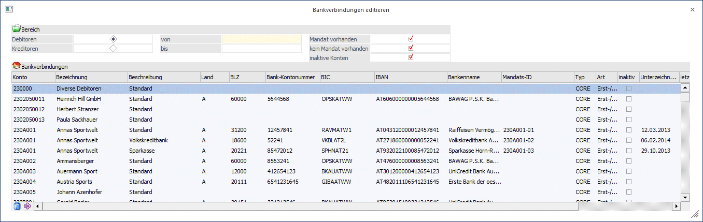
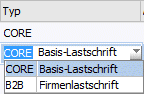
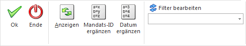
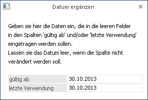
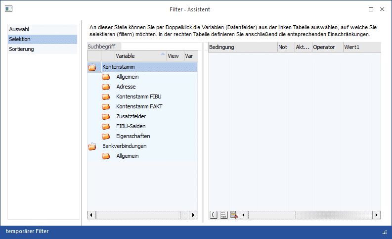

Damit bei der erstmaligen Einrichtung der SEPA-Mandate nicht jedes Konto einzeln im Personenkontenstamm editiert werden muss, kann über den Menüpunkt in der WinLine FIBU
1 Stammdaten
1 Zahlungsstammdaten
1 Bankverbindungen editieren
die Bankverbindung aller Debitoren und Kreditoren bearbeitet und ergänzt werden.
Es können alle Felder editiert werden, die auch im Fenster "weitere Bankverbindungen" im Personenkontenstamm bearbeitet werden können.

Ø Bereich
Im Fenster kann auf den Bereich der Debitoren oder Kreditoren eingeschränkt werden. Über die Felder "von" und "bis" kann eine Selektion auf die Kontonummer vorgenommen werden.
Wahlweise können die Bankverbindungen mit vorhandenem und/oder nicht vorhandenem Mandat angezeigt werden.
Ø Mandat vorhanden
Es werden alle Bankverbindungen angezeigt, die bereits eine Mandats-ID bei der Bankverbindung eingetragen haben.
Ø kein Mandat vorhanden
Es werden alle Bankverbindungen angezeigt, die noch keine Mandats-ID bei der entsprechenden Bankverbindung hinterlegt haben.
Werden beide Checkboxen ausgewählt, werden alle Bankverbindungen angezeigt.
Ø Inaktive Konten
Über diese Checkbox können wahlweise die Bankverbindungen inaktiver Personenkonten mit angezeigt werden. In der Vorbelegung ist die Checkbox nicht aktiviert.
Über den Anzeige-Button wird die Tabelle mit den zuvor definierten Einstellungen befüllt.
Neben den Spalten für die Bankverbindungsdaten
ü BLZ
ü Kontonummer
ü IBAN
ü BIC
stehen folgende Spalten zur Verfügung:
Ø Mandats-ID
Hier kann die Mandats-ID hinterlegt werden. Das Feld ist maximal 35 Stellen lang und alphanumerisch. Bei Erstellung einer Lastschrift wird diese in die Datei übergeben.
Hinweis:
Die Mandats-ID kann auch automatisch vom Programm über den Menüpunkt "Bankverbindungen editieren" erzeugt werden.
Ø Typ
Über die Auswahllistbox kann pro Mandat oder Bankverbindung zwischen CORE (Basis-Lastschrift) oder B2B (Firmenlastschrift) unterschieden werden.

Hinweis:
Es ist nicht mehr Notwendig im Zahlungsverkehr auf die Zahlungsart zu achten.
Ø Art
Über die Auswahllistbox wird die Art des Mandates definiert. Zur Auswahl stehen:
ü Erst-/Folgelastschrift
Handelt
es sich um ein neues Mandat, so ist die Auswahl Erst-/Folgelastschrift
auszuwählen. Sobald dieses Mandat verwendet wurde und eine Clearing-Ausgabe
erfolgt ist, wird in das Feld "letzte Verwendung" ein Datum eingetragen. Damit
ist gekennzeichnet, dass dieses Mandat nun keine Erst- sondern eine
Folgelastschrift ist.
ü Einmallastschrift
Bei der
Einmallastschrift kann die Clearing-Ausgabe mit diesem Mandat nur einmalig
erfolgen. Wurde das Mandat verwendet, erfolgt ein Eintrag in die Spalte "letzte
Verwendung" und das Mandat kann nicht nochmals verwendet werden.
ü Letzte Lastschrift
Die Option
"Letzte Lastschrift" wird ausgewählt, wenn es sich um den letzten Einzug
handelt, dabei wird nach der Clearing-Ausgabe automatisch das Mandat auf inaktiv
gesetzt und die letzte Verwendung eingetragen.
Ø Inaktiv
Mit dieser Checkbox werden das Mandat und die Bankverbindung auf inaktiv gesetzt.
Ø Unterzeichnung
Angabe, ab wann das Mandat gültig ist. Damit das Mandat verwendet werden kann, muss ein Datum eingetragen sein.
Ø letzte Verwendung
Das Feld wird automatisch nach der Clearing-Ausgabe befüllt. Handelt es sich um eine Erstlastschrift, erfolgt hier kein Eintrag. Mit der Clearing-Ausgabe wird es befüllt und es wird zu einer Folgelastschrift.
Das Feld kann manuell mit einem Datum befüllt werden, wenn es sich um ein Mandat handelt, bei dem bereits eine Erstlastschrift erfolgt ist.
Das Feld dient auch zur Mandatsgültigkeitsüberprüfung. Wurde das Mandat 36 Monate nicht verwendet, wird es auf inaktiv gesetzt.
Buttons

Ø OK
Die vorgenommenen Änderungen werden gespeichert.
Ø Ende
Das Programm wird verlassen und alle vorgenommenen Änderungen werden verworfen.
Ø Anzeigen (ALT A)
Aufgrund der vorgenommenen Einstellungen im "Bereich" und ggf. Hinterlegung eines Filter wird die Tabelle aktualisiert.
Ø Mandats-ID ergänzen
Über den Button "Mandats-ID ergänzen" kann für alle Bankverbindungen, die keine Mandats-ID hinterlegt haben, eine automatische vom Programm erzeugte Mandats-ID vergeben werden.
Die automatisch erzeugte Mandats-ID besteht aus der Kontonummer des Personenkontos und einer fortlaufenden Nummer.
Ø Datum ergänzen
Mit dem Button "Datum ergänzen" wird ein neues Fenster geöffnet, wo es möglich ist für die Felder "gültig ab" und/oder "letzte Verwendung" ein Datum einzutragen. Die Daten werden nur in jene Felder eingetragen bzw. hinterlegt die leer sind.

Ø Filter
Zusätzlich zu den Selektionskriterien kann auch über den Filter die Auswahl der angezeigten Bankverbindungen noch eingeschränkt werden.
Dabei stehen der Kontenstamm sowie die weiteren Bankverbindungen zur Verfügung.
